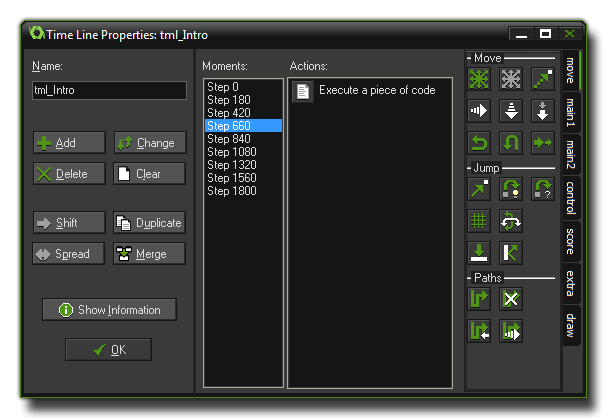

在大部分游戏中，你可能希望一些事情在特定的时间里发生。通常，你可以使用定时事件来完成这件事，但是当你的要完成的事情过于复杂的时候这根本行不通，特别是你只有12个定时器可以用。这正是为什么我们提供了时间轴资源。
在一个时间轴中你可以指定在某个游戏中的时间点执行某些特定的动作。你可以像在物体的事件中一样去调用各种动作。当你创建了一个时间轴以后，你可以绑定在一个物体上，然后这个物体的实例就会在你指定的特定时间点上执行这些动作。让我们举个例子来说明如何使用时间轴：
假设你想做一个守卫，这个守卫需要向左走20时间步（step），然后向上走10步，然后再向右走20步，最后向下走10步回到原点结束。要做到这个，你可以通过创建一个时间轴，在起始时间设置向左运动。然后在第20步处设置向上运动，接着在30步处设置向右运动，然后再第50步处设置向下运动，最后在第60步时停止运动。完成后，你就可以把这个时间轴绑定在你的守卫上，然后这个守卫就会完全按照你计划中的那样行动了。你甚至可以在时间轴中操作一个定时事件，这样这个事件就会每隔一定时间执行一次。现在你的守卫就可以在一个区域里巡逻了！
你也可以更加全局化的用时间轴来控制你的游戏。创建一个看不到的控制器物体，绑定一个在特定时间点创建敌人的时间轴。当你尝试过时间轴以后，你一定会发现它是一个多么有力的工具！
要创建一个时间轴，在 Resources 菜单中选择 Create Time Line ，或者右击资源树里的时间轴资源然后选择 Create Time Line，又或者直接点击窗口顶部的资源工具栏中的创建时间轴按钮即可。无论你用那种方法，都会看到接下来的这个窗口：

这个窗口和物体的属性窗口很类似，你可以在这里给时间轴起一个名字（像其它资源一样，必须是个独一无二的名字），同时在右侧有一个动作列表以及一系列可用动作。甚至还有一个 Show Information 按钮来显示时间轴的动作信息。不过在左边不再是时间列表，取而代之的是一个被称作 时刻 的列表。在时间轴中，一个时刻等同于一步，因此时间轴里的10个时刻等同于游戏中的10步，并且你在任何一个时刻都可以执行任意多的动作，然后被绑定上这个时间轴的物体就会在特定的时间点里执行这些动作。注意，时间轴可以在游戏中的任意时刻被启动，因此时间轴中的时刻0代表的是时间轴启动的那个时刻，而不是游戏或者房间开始的时刻。
在窗口中还有几个按钮让你来添加、删除和更改时间轴中的时刻：
- Add 添加. 这个按钮可以向时间轴中添加一个时刻。你必须指定一个从时间轴开始之后的游戏步数。然后你就可以向这个时刻中拖拽动作，就如同物体的事件一样。同样在这里你也可以使用命名化的 代码动作，如果你不知道什么是命名化的代码，你可以参见脚本 - 添加注释和命名块。
- Change 修改. 这个按钮可以修改当前选定的时刻的时间。
- Delete 删除. 这个按钮可以删除一个或多个时刻范围。你必须设定要删除的时刻范围的起始与结束时刻。在这个范围之中的全部时刻都会被删除。
- Clear 清空. 这个按钮可以删除整个时刻列表中的所有时刻。
- Shift 平移. 这个按钮是用来平移一个时刻范围到一个新的时刻。你必须指定起始和结束的时刻范围，以及新的范围的起始时刻。如果不同的时刻出现重叠，那么它们的动作列表将会被合并。
- Duplicate 复制. 这个按钮的作用和平移按钮很类似，只不过这个按钮会创建一份时刻的拷贝。
- Spread 伸缩. 这个按钮可以让你延长或者缩短一个时刻范围。你指定要伸缩的范围的起始和结束时刻，再指定新的范围长度的百分比。100%意味着没有任何变化。一个小于100%的值意味着时刻之间的间隔变小了，而一个大于100%的值意味着时刻之间的间隔变长了。举例来说，在时刻5、8、12处分别有一些动作，然后你指定了起止时刻5至12以及200%的伸缩，那么这三个时刻会被分别移动至时刻5、11、19处（这些时刻之间的间隔翻了一倍）。同样，当时刻之间出现重叠，那么它们的动作会被合并。
- Merge 合并. 这个按钮可以把多个时刻的动作合并到一个时刻上来。你需要指定要合并的时刻范围的起始和结束时刻，合并后的动作会位于这个范围的起始时刻上。
请注意，虽然我们可以创建一个负数的时刻，不过这是完全没有意义的，因为它永远不会被执行！
| Converted from CHM to HTML with chm2web Pro 2.85 (unicode) |